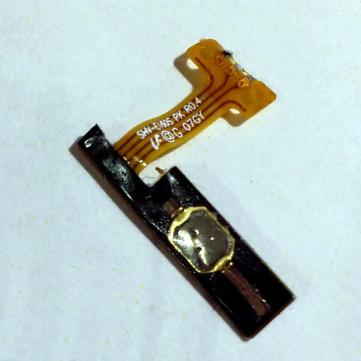
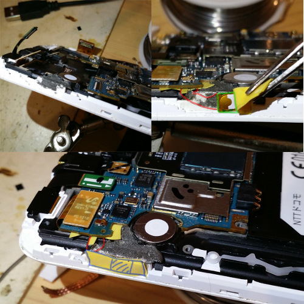

My Galaxy Note keeps on vibrating every 2 seconds
Quick check on internet, it's a known disease of the recent Samsung phones: the power button stays stuck. You have to open your phone and replace the tact switch... if you have american model. Being in Japan I have the pleasure to own a model that includes TV and for the which the tact switch is repaced by a cheapest kapton sandwich switch (see the pictures).
A few other gentleman had the same problem and explained here hteir solution:
- http://tinwhiskers.net/?p=576
- http://www.blogtechtips.com/2014/04/06/samsung-galaxy-note-vibrates-will-power-fix/
Fixing
- Open your phone by removing all the screws in the back
- Pry the back open by sliding a plastic lever or driver along the screen
- Remove the few last screws and unplug the daughter-boards
- Unsolder the power button
- Solder another one instead
- Voila
- ...at least that was the plan. It worked, minus a few rework, the power on is working again: solder the hair thin wire was a pain, assembling was tricky and I had to put some extra layers of tape to have the external button press at the right place. The big fail is that the 2 bottom haptic buttons don't work anymore. Don't know why, put all screws (ahum... minus one) in place but still doesn't work.

The culprit button that doesn't work anymore

Air-wire fixing: that worked but we all agree it can't stay

Fixing explained : in red the hair-thin wires, green the touch switch